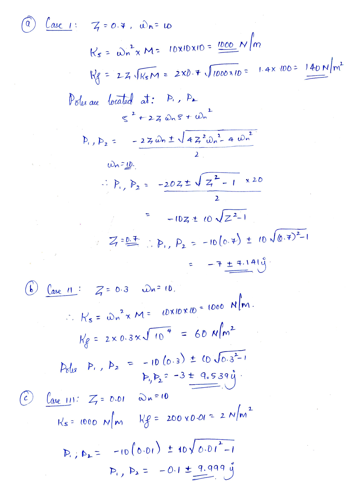

A Report on
Problem solving using analytical methods and MATLAB
Submitted for the fulfillment of the CIE (Event-2) for the course
Control Systems - EC540
Submitted by:
| Name | Mohamed Farhan Fazal |
| USN | 01JST18EC055 |
| Roll No. | 29 |
| Name | Mohamed Farhan Fazal |
| USN | 01JST18EC055 |
| Roll No. | 29 |
For the mass spring system derive expressions for ζ and ωn. If M=10 Kg, determine
spring and friction constant for following cases:
Show the plots for step responses and pole-zero
locations in MATLAB.


According to Newton's Laws of motion:
and
and



clear all;
close all;
clc;
% DECLARING CONSTANTS STATICALLY
% frictionConstant = [140 60 2];
% springConstant = 1000;
% MORE DYNAMIC CONSTANT CALCULATION
massOfBlock = 10;
zetaValues = [0.7, 0.3, 0.01];
naturalFrequency = 10;
springConstant = naturalFrequency^2 * massOfBlock;
frictionConstant = 2*zetaValues*sqrt(springConstant*massOfBlock);
for index = 1:length(frictionConstant)
figure;
G = tf([1], [massOfBlock frictionConstant(index) springConstant]);
response = stepplot(G, "m");
grid on;
legend(strcat("ζ = ", num2str(zetaValues(index)), ", ωn = 10"));
disp(strcat("Time Domain Parameters of transfer function with ", "ζ = ", num2str(zetaValues(index)), ", ωn = 10"))
disp(stepinfo(G));
response.showCharacteristic('PeakResponse');
response.showCharacteristic('RiseTime');
response.showCharacteristic('SettlingTime');
response.showCharacteristic('SteadyState');
setAxisLimits(axis);
end
% THIS SNIPPET IS TO ADD PADDING TO THE PLOT
function setAxisLimits(axisData, padding)
% RELATIVE TO THE OVERALL PLOT
% 0.1 IS 10% AND 0.5 IS 50%
arguments
axisData;
padding = 0.05; % PADDING DEFALUTS TO 5%
end
axisLength = axisData(2) - axisData(1);
axisHeight = axisData(4) - axisData(3);
axis([axisData(1) - padding * axisLength axisData(2) + padding * axisLength axisData(3) - padding * axisHeight axisData(4) + padding * axisHeight]);
end
function labelOnPlot(A)
text(real(A(1)), imag(A(1)), strcat("\rightarrow",num2str(A(1))));
text(real(A(2)), imag(A(2)), strcat("\rightarrow",num2str(A(2))));
end
G =
1
---------------------
10 s^2 + 140 s + 1000
Continuous-time transfer function.
Time Domain Parameters of transfer function with ζ = 0.7, ωn = 10
RiseTime: 0.2127
SettlingTime: 0.5979
SettlingMin: 9.0010e-04
SettlingMax: 0.0010
Overshoot: 4.5986
Undershoot: 0
Peak: 0.0010
PeakTime: 0.4408
G =
1
--------------------
10 s^2 + 60 s + 1000
Continuous-time transfer function.
Time Domain Parameters of transfer function with ζ = 0.3, ωn = 10
RiseTime: 0.1324
SettlingTime: 1.1230
SettlingMin: 8.6139e-04
SettlingMax: 0.0014
Overshoot: 37.1410
Undershoot: 0
Peak: 0.0014
PeakTime: 0.3224
G =
1
-------------------
10 s^2 + 2 s + 1000
Continuous-time transfer function.
Time Domain Parameters of transfer function with ζ = 0.01, ωn = 10
RiseTime: 0.1050
SettlingTime: 38.9674
SettlingMin: 6.0902e-05
SettlingMax: 0.0020
Overshoot: 96.9071
Undershoot: 0
Peak: 0.0020
PeakTime: 0.3142
From the above results and observations, we can conclude the following